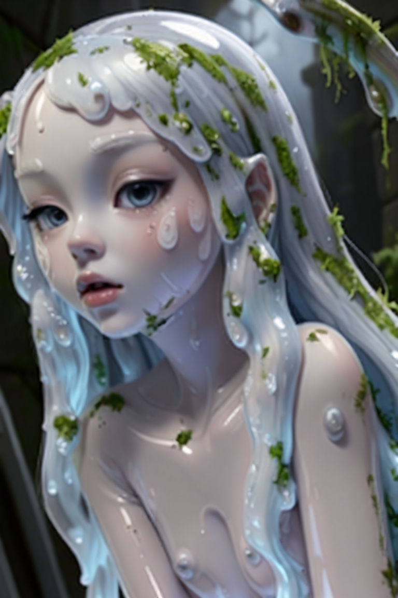

Святилище
Войти в маршрут, собрать строй, забрать трофей.
Оперативная строка
Текущий выход
Путь собран. Проверь следующий узел, строй и входи в главу.

Точка выхода
Текущий выход
Следующая цель
МаршрутФокус выхода
ЛидерОтряд в строю
4 герояЭкран экспедиций
Хроника руин
Первая вылазка ведёт через собор листвы: тихие пролёты, мокрый камень, архивные следы и узлы, которые ещё держит живой страж.
Исследование
Люмен, архивные записи, доступ к боевой сцене главы.
Ключевой узел
Следующий входРазломанный вестибюль
Партия входит в зал, где камень уже зарос мягким мхом и слышен голос проводницы.
AP 0
Лесной пояс
Моховая тропа
Туман стелется между стволами, а руинные арки едва видны через золотую пыльцу.
Тактическая сцена
Фаза I · Сломанное святилище
Ход
1
Активный ход
Лиора
Проводница мха
Награда
Разбор выхода
Выбор сигила святилища
Что укрепить между вылазками
Выберите один глобальный акцент для следующих выходов. Он будет виден в доме, бою и на наградах.
Эпилог демо
Сад снова ответил
Первая глава закрыта, святилище помнит ваш выбор, а отряд готов к следующему слою мира.
Проводница мха
Лиора
Тихая проводница, в чьей форме уже чувствуется работа памяти и сырой живой архитектуры.
Проводница святилища
Лиора
Проводница мха
“Руины отвечают тем, кто умеет слушать медленно.”
Силуэт
Длинная световая фигура, тонкие рукава и круг навигации за спиной.
Материалы
Пергамент, мох, витражная эмаль, полированный камень.
Steam key art
Три четверти корпуса, силуэт читается даже в маленькой капсуле за счёт светового нимба и висящих прядей.
Усиление героя
Сигил подготовки I
Усиливает базовый запас HP, щит и силу навыков для следующих экспедиций.
Запись
Разломанный вестибюль
Святилище не рухнуло. Оно просто стало говорить корнями и каплями воды.
Полевая заметка
Короткий путь к мосту открыт, если сначала прочитать рисунки архитектора.
Оранжерейщик Эзра
Тихая лавка святилища
Здесь появляются материалы, которые выглядят как часть мира, а не как абстрактные mobile-иконки.
Введение
Последняя Ступень
Steam-first tactical party-RPG о походах через заросшие руины и боях со стражами живой архитектуры.
Ключевые правила